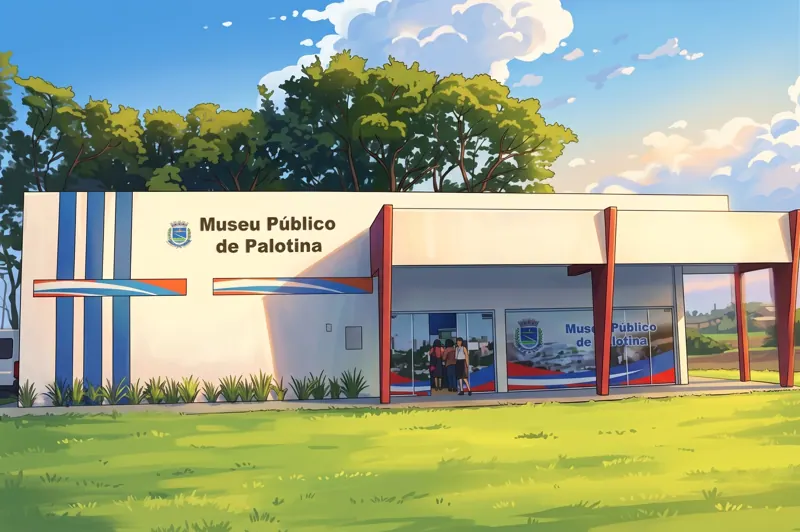

Conhecer o espaço →MEMÓRIA · PATRIMÔNIO · HISTÓRIA
Museu Municipal Antônio Bernardino Daniel
Também conhecido como Museu Público de Palotina. Seu acervo reúne peças, documentos e objetos antigos doados por pioneiros da região, do mundo analógico ao digital.
ENDEREÇO
Rua 24 de Junho, s/n — Lago Municipal
Palotina — PR
Entrada gratuita.
VISITAÇÃO
Confirme os horários por telefone antes de visitar.